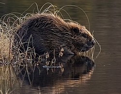
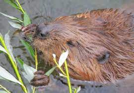

Bobor európsky (iné názvy: bobor vodný,bobor eurázijský; lat. Castor fiber) je jeden z dvoch druhov bobrov. Patrí medzi bobrovité hlodavce. V minulosti obýval súvisle celú Palearktídu. Výskyt na Slovensku bol doložený na 11,6 % územia. Na Slovensku je to zákonom chránený druh živočícha. Je to najväčší európsky hlodavec. Dĺžka 75 – 100 cm, chvost 30 – 40 cm, hmotnosť 15 – 30 kg. Chvost pri koreni je síce okrúhly a osrstený, ale na rozšírenej časti holý a zhora sploštený, široký. Má zavalité v zadnej časti rozšírené telo s krátkymi nohami; celkové zafarbenie srsti môže na chrbte varírovať od hnedogaštanovej po tmavohnedú; naspodku je bledší, zemitohnedý; pĺzne postupne po celý rok, najintenzívnejšie v apríli – máji a v auguste – septembri, samce o mesiac neskôr ako samice. Zo 429 mapovacích kvadrátov DFS sa celkovo trvalo vyskytoval v 50 (11,6 % rozlohy Slovenska, do roku 1964 len v 41, 9,5 %) v nadmorských výškach 113 (Sap, Dunaj) – 825 m n. m. (Veľké Osturnianske jazero) a prechodne sa vyskytol v 1 551 m n. m. (Zelené pleso, Východné Tatry). Od roku 1977 sa šíri z Dolného Rakúska na Záhorskej a Podunajskej nížine a od roku 1981 z Poľska.
 